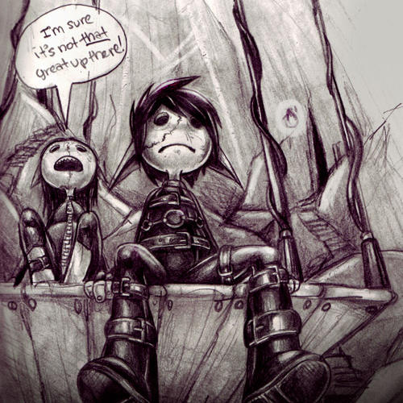
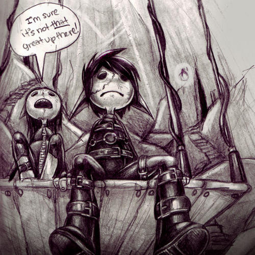
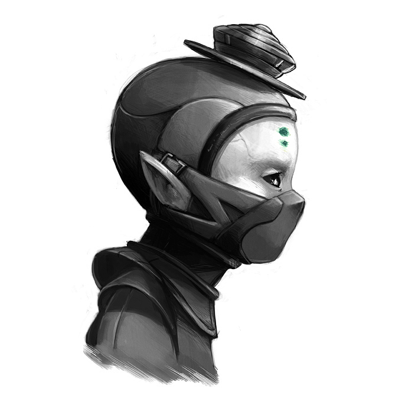
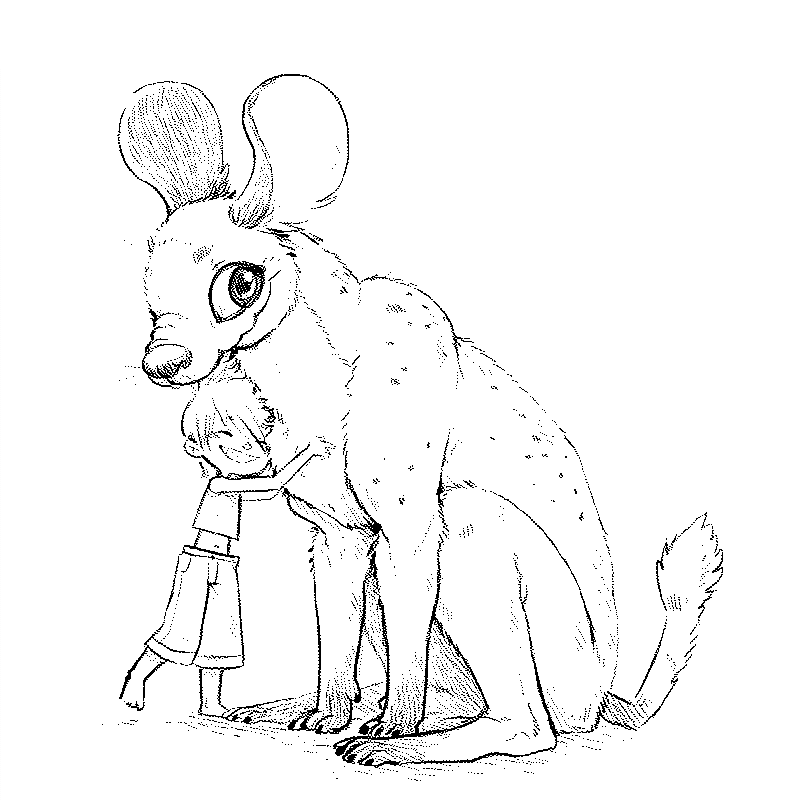
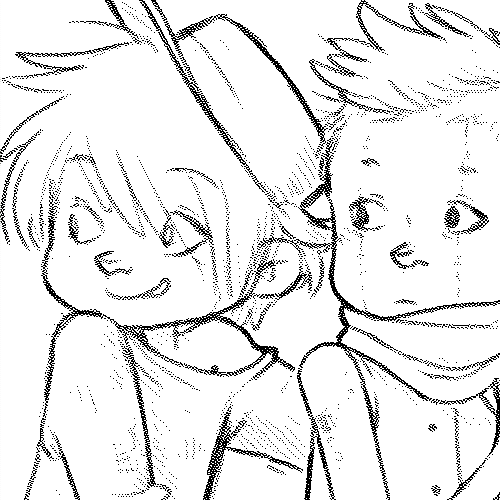
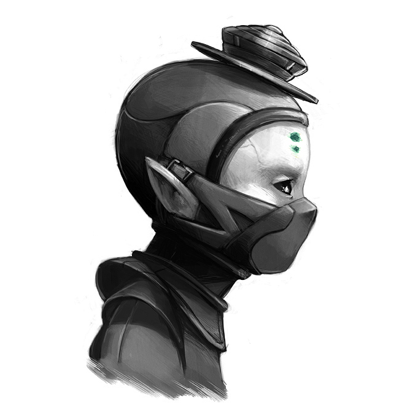
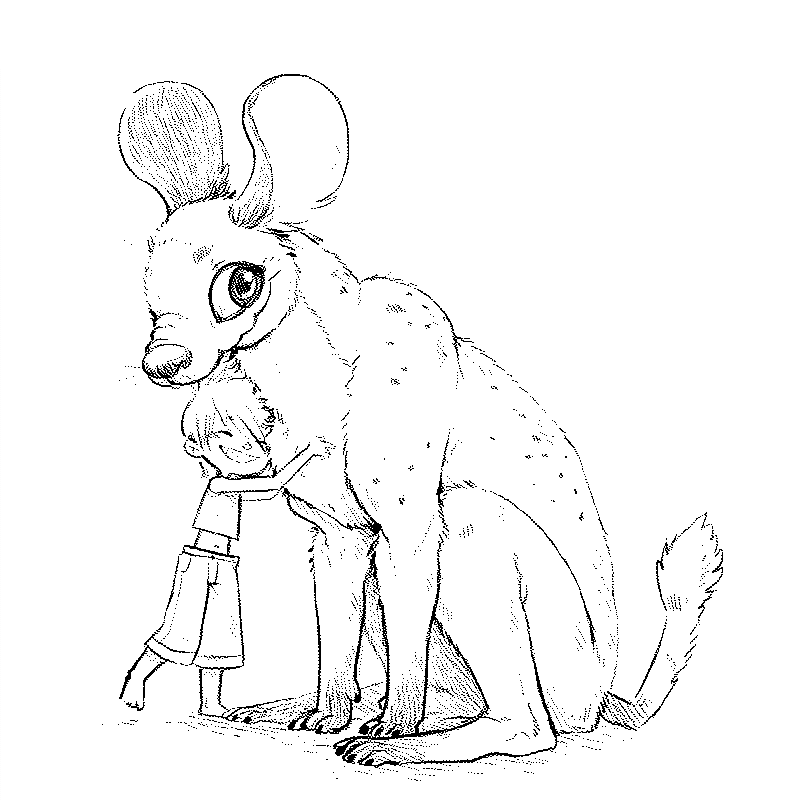
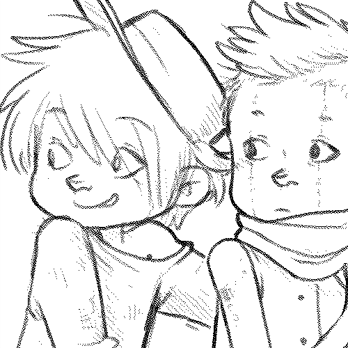

Desert Tales
Wiktopher is a fiction story.
The story follows two characters, Lupin and Eka, as they navigate the barren lands of the Soronan Desert after an accident that leaves Lupin without home or family, they seek food, company and supplies while living day-to-day. The novel has a number of added content (glossary) that permits the reader to learn more of the world and its people.
This story is written without the use of gender pronouns—no small feat. I use they on occasion, but prefer to use the names of characters, birth city, race, titles, and sometimes use parts of the body— like, 'the hand pressed on the heart' instead of 'his/her hand pressed on her/his heart'. I chose not to use gendered pronouns because I don't like how people adjust their judgments of a character based on their perceived gender. I wanted to avoid that for this story. Again, this is based on my own experiences as a non-binary person, on my frustrations with people’s gendered expectations of others.
Wiktopher is an attempt at eco-fiction, but because it is so alien I'm not sure it befits that label. Fantasy eco-fiction then? Themes include environmentalism, cultural identity, food preservation, community, low-tech etc.
Production story
The story of Wiktopher is an elaboration of a short film I did in 2008 called uno. This project was supposed to expand into a comic, which included many of the Wiktopher characters like Eka, Uno, Zucca, Lupin and Thirteen.
I produced a lot of exploratory art for the project but the comic was never completed.
 

I began writing a story with those same characters while in Tahihi, french polynesia in 2017. Because of laptop problems, drawing using heavy software like Photoshop was near impossible, and so we were forced to consider other hobbies. The story is inspired from our own travels and discoveries.
The writing of the book was completed on October 2nd 2021, but the road to a truly finished novel is a long one. I still have corrections to make. I hope to publish a physical copy, which would include a fauna/flora encyclopedia, and to release it as an audio book.


 




